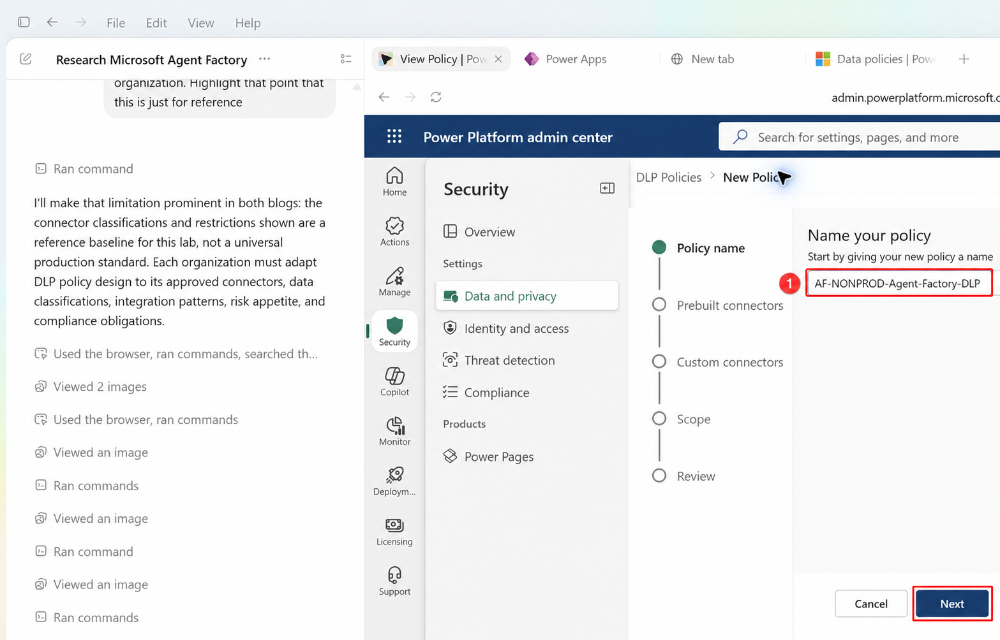
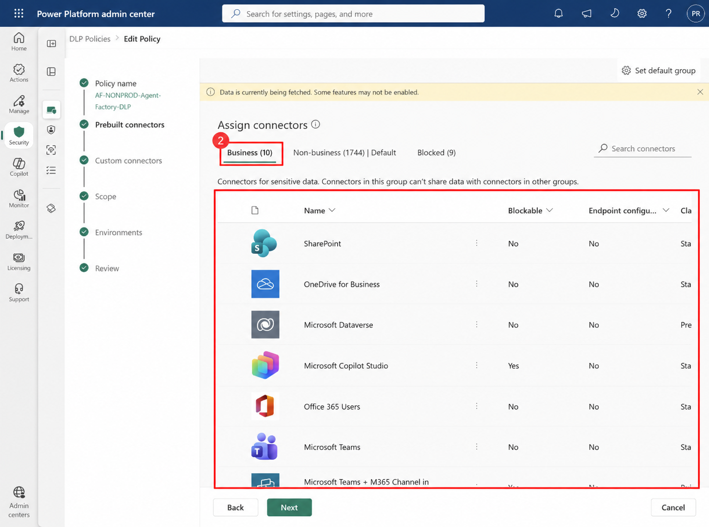
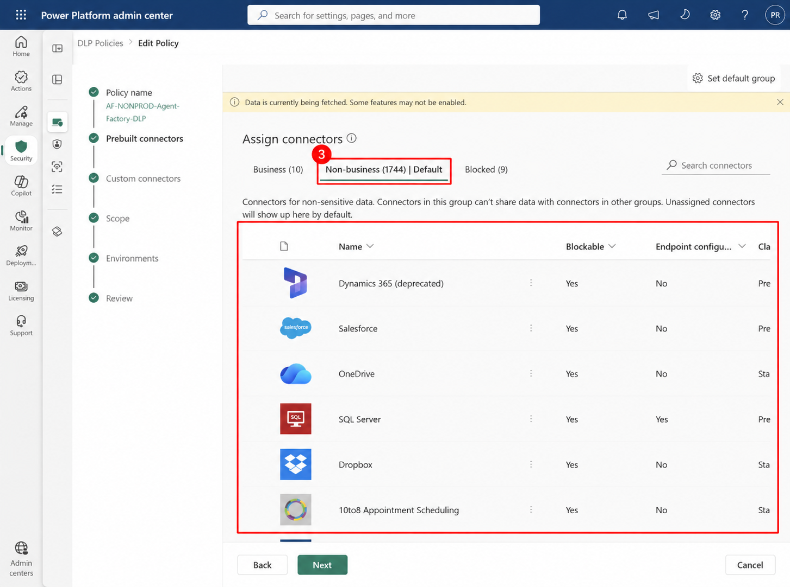
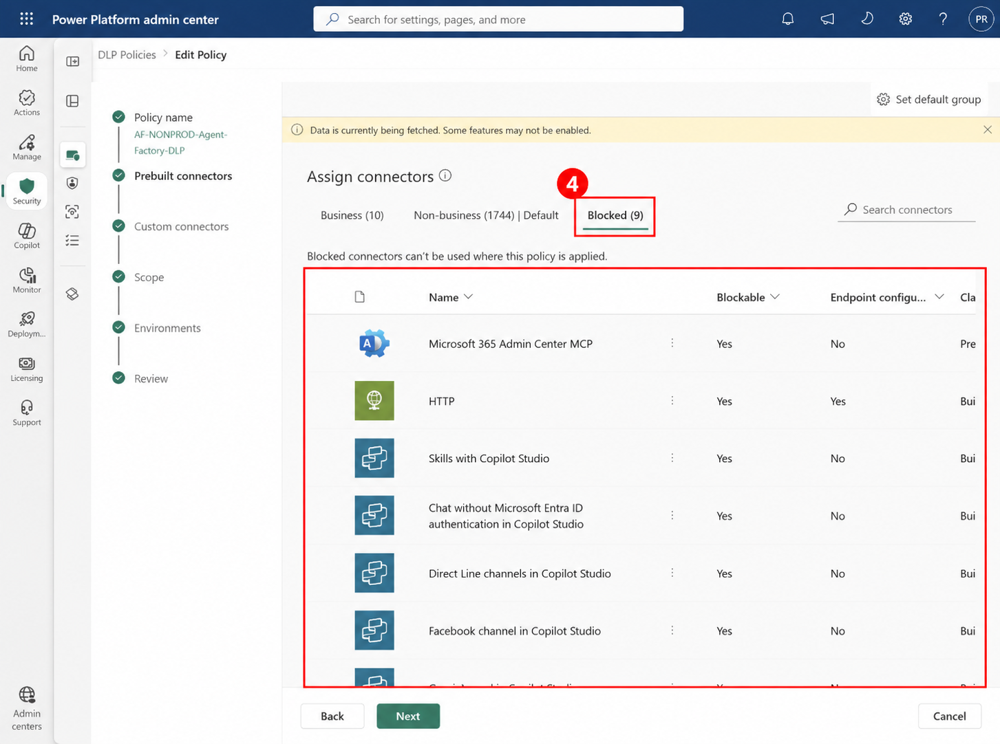
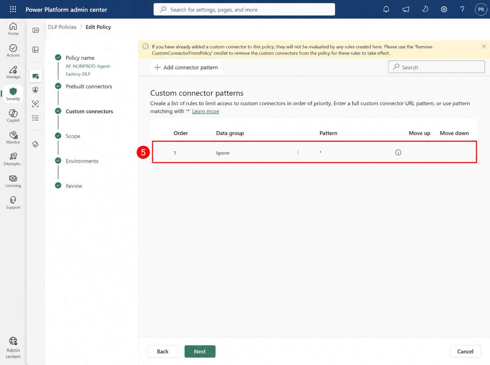
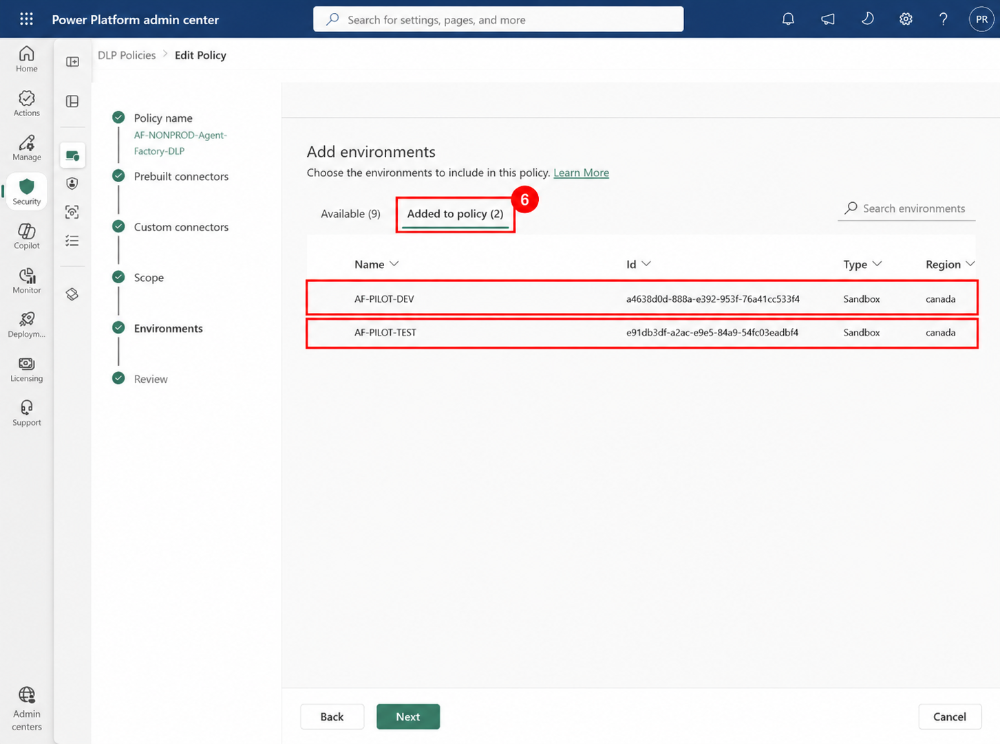
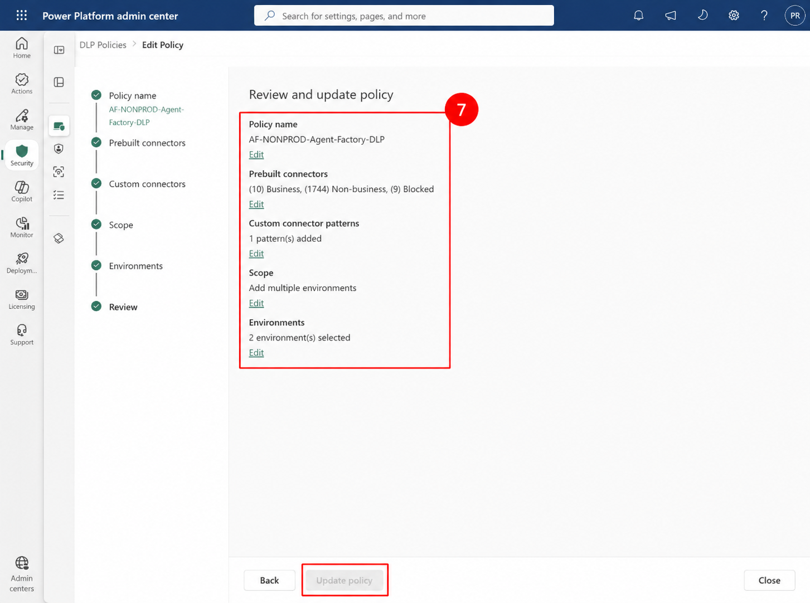

Prashant Rangi · 2026-10-15T15:03:15 · publish
Categories: Copilot Studio, Copilot Studio & Agent Factory
Tags: Agent Factory, Agent Governance, Copilot Studio
Important: Production and nonproduction DLP policies differ by organization. Adapt connector, endpoint, MCP server, knowledge source, HTTP, tool, trigger, and channel decisions to your data classification, risk appetite, business requirements, and compliance obligations.
A Power Platform data loss prevention (DLP) policy groups connectors according to how they may exchange data. Business and Non-business connectors are isolated from one another, while Blocked connectors cannot be used in environments covered by the policy. This creates a practical control plane around the data sources, tools, channels, HTTP capabilities, knowledge sources, and MCP servers available to makers and agents.
For an Agent Factory, a nonproduction policy is important because DEV and TEST need enough capability for controlled experimentation without allowing unrestricted movement of sensitive data. The policy is not a universal allowlist: it is an organization-specific governance baseline that should be reviewed whenever connectors, agent capabilities, data classifications, or regulatory obligations change.
This design deliberately allows broader experimentation than production. Work IQ and Microsoft MCP servers are not automatically trusted with Business data: keeping them in Non-business preserves group isolation while they are evaluated. Organizations may classify them differently after security, privacy, and data-owner approval.
In the Power Platform admin center, open Security > Data policies, create a new policy, and enter the policy name shown below.

Open Prebuilt connectors, select the connector, tool, channel, knowledge source, or MCP server, and then use the action bar to assign it to the required group. The available action changes according to the item’s current group.
Place only connectors approved to handle the pilot’s sensitive or governed data in Business. The highlighted list is the reference allowlist used here.

Use Non-business for experimentation that must remain isolated from Business connectors. Work IQ/MCP capabilities are retained here for controlled nonproduction evaluation.

Block capabilities that bypass identity, expose public knowledge, invoke generic HTTP, or publish through channels not approved for the pilot.

The wildcard custom-connector pattern is visible below. In this pilot it remains Ignore so custom connectors are not reclassified by this pattern. Before expanding access, replace the wildcard with approved URL patterns or move it to a governed data group.

Choose Add multiple environments and add only the approved nonproduction environments. Do not include the production environment in this policy.

Confirm the connector counts, custom connector pattern, scope, and two selected environments before creating the policy. The edit view uses Update policy; initial creation uses Create policy.

A nonproduction DLP policy gives an Agent Factory a controlled place to learn, build, and test. Its purpose is not to remove innovation, but to create clear data boundaries and an auditable path to production. Review the policy regularly as connector capabilities and organizational risk decisions evolve.